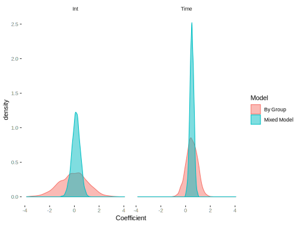

Mixed Models
Mixed models, also known by other names, explicitly model the random effects due to the clustering in the data. They are extremely flexible approaches that can handle crossed and nested clustering structures, as well as different residual dependency structures. In addition, they can fit within other modeling approaches that can be expressed essentially identically12, allowing for even more modeling considerations. They also have a very natural extension to Bayesian estimation, and, as we will see later, an alternative ‘latent variable’ interpretation. In short, there is a lot going on here.
For observations \(i\) nested within cluster \(c\), we can depict the model in a couple of different ways, but the following is fairly straightforward and in keeping with how the data was created. The main idea is that we have cluster specific coefficients for the intercept and time.
\[ y_{ic} = \beta_{0c} + \beta_{1c} * \mathrm{time}_{ic} + \epsilon_{ic} \] \[\beta_{0c} = \beta_0 + \beta_2 * \mathrm{Treat_{c}} + \gamma_c\] \[\beta_{1c} = \beta_1 + \nu_c\] \[\gamma_c\sim \mathcal{N}(0, \tau^2)\] \[\nu_c\sim \mathcal{N}(0, \eta^2)\] \[\epsilon_{ic} \sim \mathcal{N}(0, \sigma^2)\] Putting the model together we get:
\[ y_{ic} = (\beta_0 + \gamma_c) + (\beta_1 + \nu_c) * \mathrm{time}_{ic} + \beta_2 * \mathrm{Treat_{c}} + \epsilon_{ic} \] So what we end up with conceptually is the standard linear model, but with cluster specific deviations/effects. These effects are random in that they are drawn from a specific distribution, in this case normal, with mean 0 and some standard deviation, which is estimated as part of the model. Recall that we specified these values at the beginning though in terms of standard deviation. In addition, the cluster level effect of treatment enters the model as would any other covariate.
To estimate this model we’ll use the nlme package, as it will also allow us to easily estimate the residual correlation structure. The key part is the random = argument, where we note that we want random effects for the intercept and time.
library(nlme)
mixed_mod = lme(y ~ time + treatment, random = ~1+time|id, correlation=corAR1(form=~time|id))| Value | Std.Error | DF | t-value | p-value | |
|---|---|---|---|---|---|
| (Intercept) | 0.133 | 0.030 | 7499 | 4.448 | 0 |
| time | 0.507 | 0.009 | 7499 | 55.846 | 0 |
| treatmenttreatment | -0.425 | 0.040 | 2498 | -10.567 | 0 |
| Min | Q1 | Med | Q3 | Max |
|---|---|---|---|---|
| -3.2 | -0.55 | 0.02 | 0.55 | 3.28 |
| Observations | Groups | Log-restricted-likelihood | |
|---|---|---|---|
| id | 10000 | 2500 | -12630 |
| Variance | StdDev |
|---|---|
| 0.332 | 0.577 |
| 0.067 | 0.258 |
| 0.908 | 0.953 |
| Phi |
|---|
| 0.67 |
The results show that the primary regression coefficients, known in the mixed model literature as ‘fixed effects’, are reasonably recovered, as are the standard deviations for the random effects (recall intsd, timesd, and sigmasq). In addition, Phi estimates what we were calling rho. Furthermore, there is a low estimated correlation between intercepts and slopes (not shown), in keeping with how the data was generated.
A common method for determining whether to use the FE vs. RE is the Hausman test, but it comes with its own assumptions and the standard version is problematic except in the simplest of settings. The plm package provides this if you want to try it, but will only be applicable to the random intercepts scenario. It tests whether the assumption underlying the random effects approach is viable, and if rejected, one would go with the FE model. As it is an ‘accept the null’ test, it is fundamentally illogical, to go along with the other issues.
It may be instructive to compare the random coefficients to the approach where we conducted a model for each individual.

What the visualization makes clear is that the mixed model has a regularizing effect on the coefficients relative to the by-group model, shrinking the coefficients toward the population average. The by-group approach overfits, treating each individual as a unique snowflake, while the mixed model recognizes that they might have things in common. Practically and philosophically this is quite appealing.
Pros
- Examine cluster-specific effects
- Can retain cluster level variable effects
- More efficient than FE (and cluster robust approach) if assumptions hold
- Easily incorporate additional sources of variance
- Additional sources of variance may be due to nested or crossed grouping structure and even interactions of random effects
- Can model residual dependency
- Can allow any coefficient to be ‘random’
- Close ties to other modeling approaches
Cons
- Inconsistent estimates if predictors are correlated with random effect(s) and other steps not taken
- May have difficult estimation in the generalized case, e.g. logistic model
Gist: Basically the mixed model can provide everything you need, and not necessarily at the cost of consistency.
Such as spatial random effects, additive models, network effects etc. See the Fahrmeier et al. reference.↩